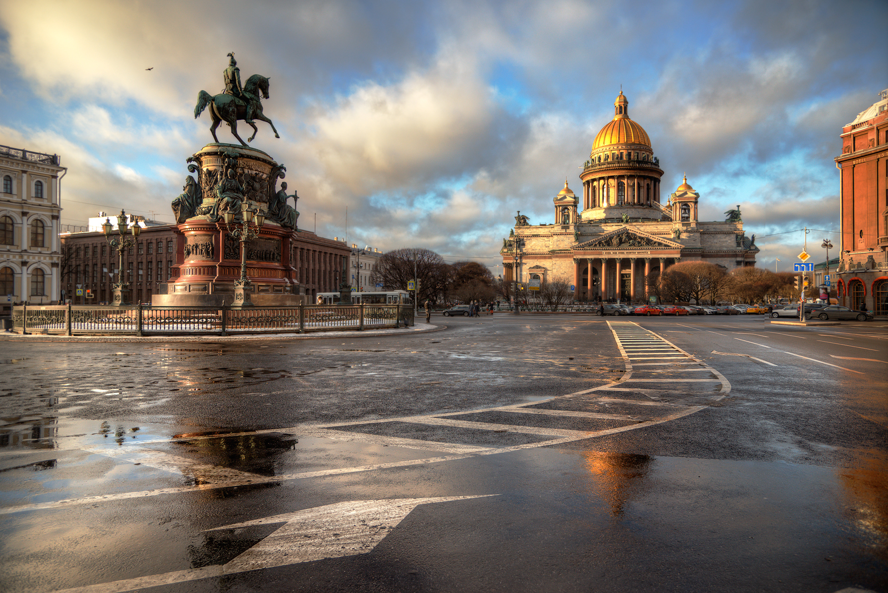

- Интернет-гид по Санкт-Петербургу www.spb-gid.ru;
- Каталог сайтов о Санкт-Петербурге www.spb.gid4me.ru;
- Портал центра Петербурговедения www.mirpeterburga.ru;
Второй по численности населения город России. Город федерального значения. Административный центр Северо-Западного федерального округа. Основан 27 мая 1703 года царём Петром I. В 1712-1918 годах - столица Российского государства.
Население: 5.388.759 человек по состоянию на 2021 год.

Санкт-Петербург был основан по приказу российского императора Петра I 16 мая 1703 года. В течение первых десяти лет своего существования город имел значение, прежде всего, как крепость и морской порт, но благодаря оживленной торговле он достаточно быстро превратился в богатый экономический центр с развитой промышленностью и ремеслами.

| Описание | Изображение |
|---|---|
| Иссакиевский Собор. Исаакиевский собор (собор преподобного Исаакия Далматского) - самый крупный и известный храм в Санкт-Петербурге, являющийся доминантой и вторым по высоте зданием, после Петропавловского собора, в центре Петербурга. |
|
| Собор Спас на Крови. Собор Воскресения Христова («Спас-на-крови») в Санкт-Петербурге. Храм-памятник построен в 1883–1907 гг. архитектором А. А. Парландом (при участии архимандрита Игнатия (Малышева)) за счет казны и на частные пожертвования на месте смертельного ранения императора Александра II — отсюда народное название «Спас-на-крови». |
|
| Казанский Собор. Каза́нский кафедра́льный собо́р (Собор Казанской иконы Божией Матери) — один из крупнейших храмов Санкт-Петербурга. Построен на Невском проспекте в 1801—1811 годах архитектором Андреем Воронихиным для хранения чтимого списка чудотворной иконы Божией Матери Казанской. |
|
| Эрмитаж. «Госуда́рственный Эрмита́ж» (до 1917 года — «Императорский Эрмитаж») — музей изобразительного и декоративно-прикладного искусства, расположенный в городе Санкт-Петербурге Российской Федерации. Основан 7 декабря 1764 года. |
|
| Главный Штаб. Зда́ние Гла́вного шта́ба — историческое здание, располагающееся на Дворцовой площади в Санкт-Петербурге. Строительство здания продолжалось с 1819 по 1829 год. |
Как дивный храм, ты сердцам открыт!
Сияй в веках красотой живою,
Дыханье твое Медный всадник хранит.
Несокрушим — ты смог в года лихие
Преодолеть все бури и ветра!
С морской душой,
Бессмертен, как Россия,
Плыви, фрегат, под парусом Петра!
Санкт-Петербург, оставайся вечно молод!
Грядущий день озарен тобой.
Так расцветай, наш прекрасный город!
Высокая честь — жить единой судьбой!
Ссылка на гимн города со словами, без слов и на видеоклипы:
www.hymnus.ru/gimn-sankt-peterburga